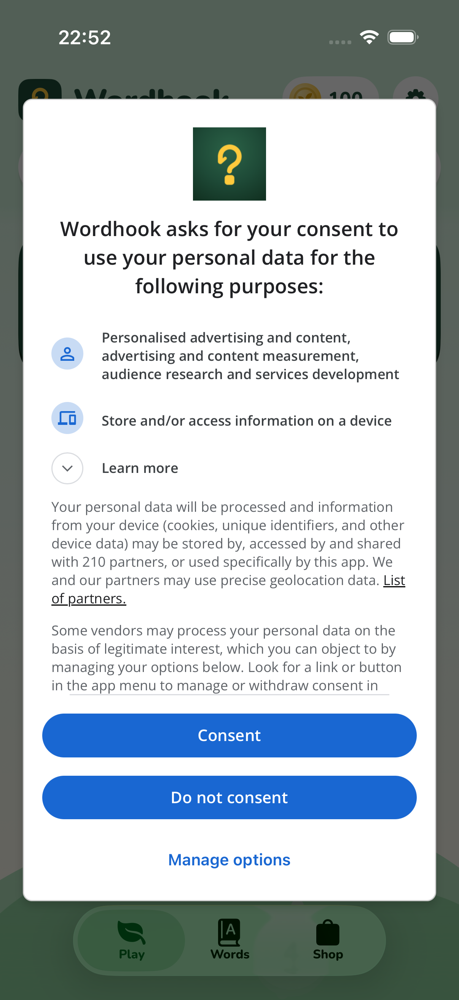
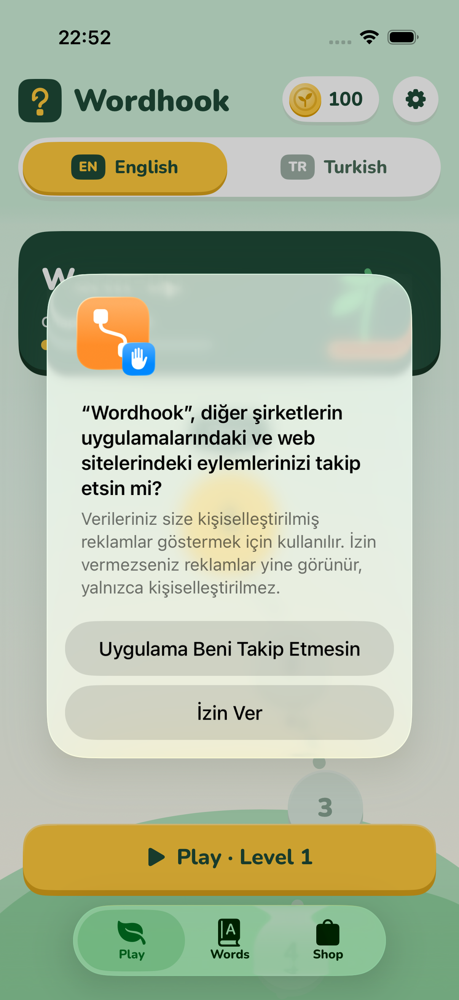
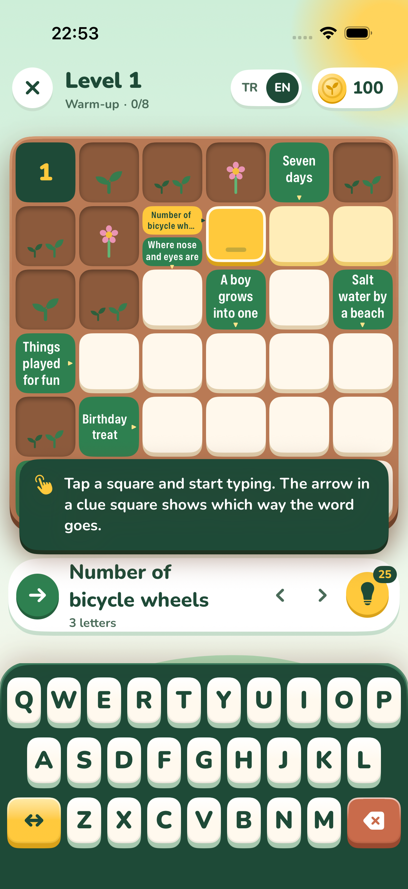
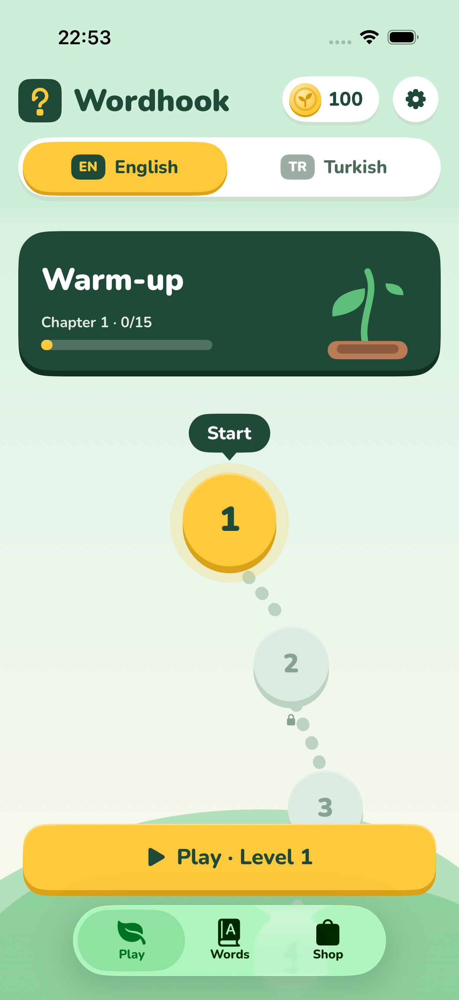

01 EEA consent with decline option

These unedited screenshots were captured by automated iOS UI tests using the actual published Wordhook Google consent message and official Google test ad units. Google's supported EEA/other geography overrides were used in a Debug QA build. Geography overrides and consent resets are not enabled in the App Store binary.
The same production consent coordinator is used in all regions. Regional data consent comes first where required. ATT is only requested if regional personalization choices allow it and Apple tracking status is undetermined. Refusing regional personalization skips ATT. Refusing ATT disables personalization; it is not followed by another automatic consent form. A prior ATT refusal plus an outstanding regional decision leaves ads disabled, while gameplay remains accessible. A user can open regional choices explicitly in Settings; those choices cannot override Apple tracking permission.
The iOS system language in these captures is Turkish. “Uygulama Beni Takip Etmesin” means “Ask App Not to Track”. The Google consent form and app interface are in English.
Tests completed on iOS 26.5. The three live smoke tests cover regional refusal, regional acceptance followed by ATT refusal and renewal, and a non-regulated region. The separate deterministic unit matrix also covers restrictions, missing TCF signals and consent errors.



